Lily y Leo
Lily, esta es mi manera de decirte que me gustas mucho. Ya no puedo esconder este sentimiento y es muy grande. Aquí solo seré Leo, contigo me siento tan bien, puedo ser yo mismo y se que nunca me vas a juzgar. Siento que nos hemos adaptado muy bien el uno al otro, me gusta que sea de esa manera. Te quiero con todo mi corazón, estás en un lugar muy importante en el y no hay día en el que no sea feliz. Eres muy especial, simplemente con el hecho de existir ya me alegraste por completo. Coincidir contigo fue lo más hermoso que me pudo haber pasado <3.
No puedo dejar de sentir una inmensa alegría por todo esto, te quiero conocer cada día y estar contigo toda una vida. Y las que siguen después de esta y mira que soy muy afortunado de que estés en mi vida mi queridísima novia.
Mira tu collage de victorias en el UNO, te diré que poco a poco vas cosechando más y más. No importa que tipo de UNO sea, siempre me vas a terminar dando una buena arrastrada y que encanta que sea así.
Cabe resaltar que también agregué ese bendito perro que me dibujaste.


 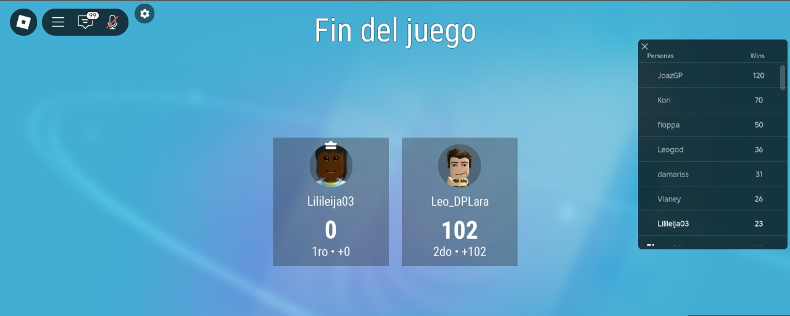
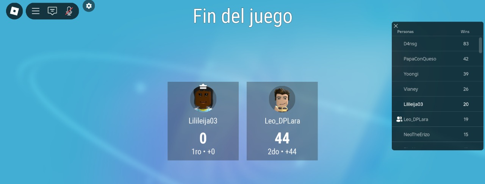
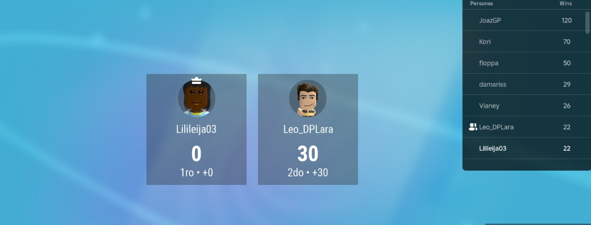
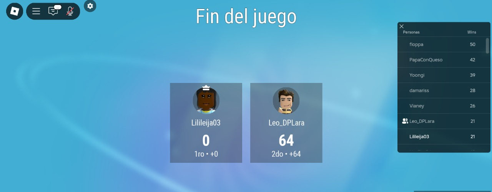
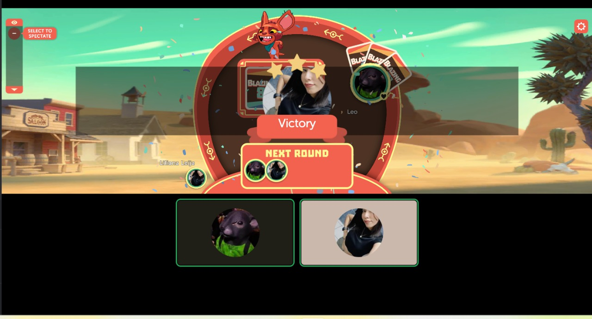
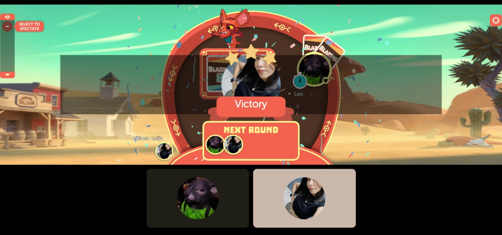
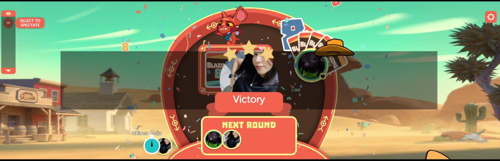
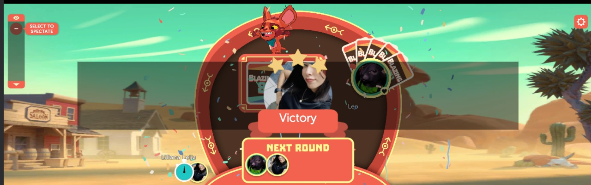
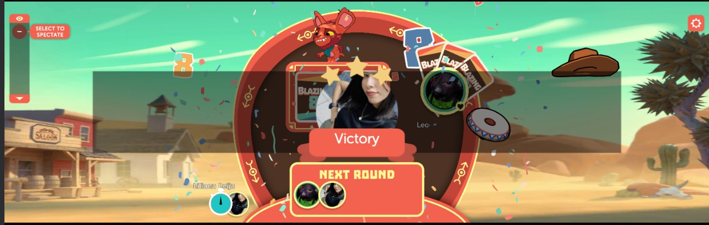
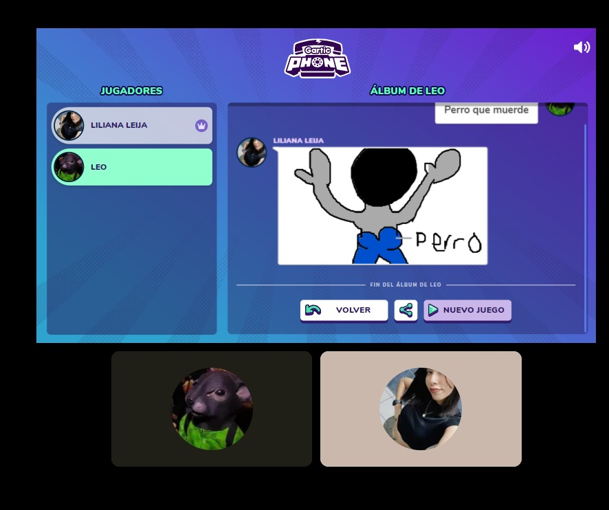
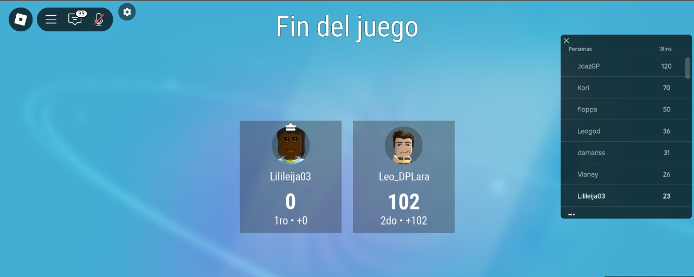
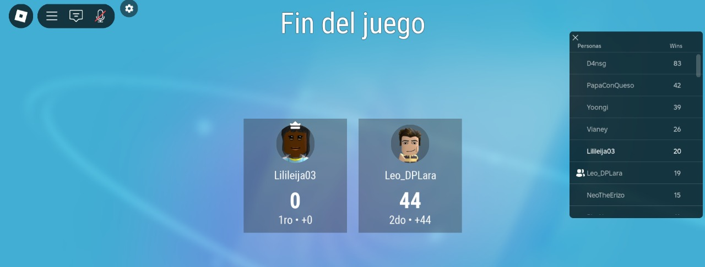
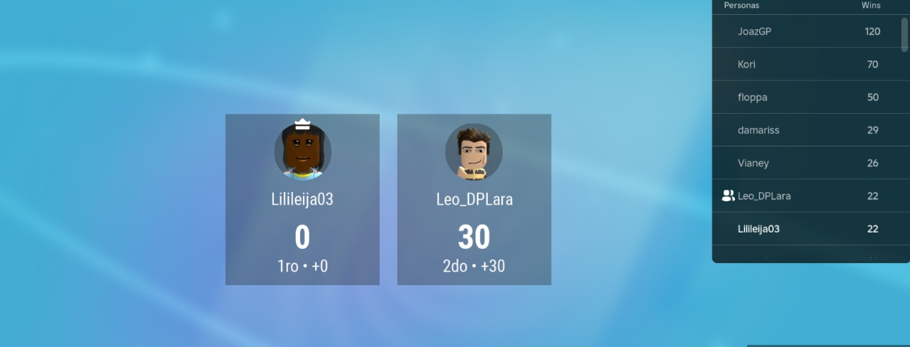
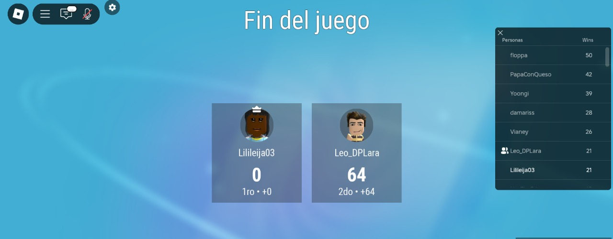
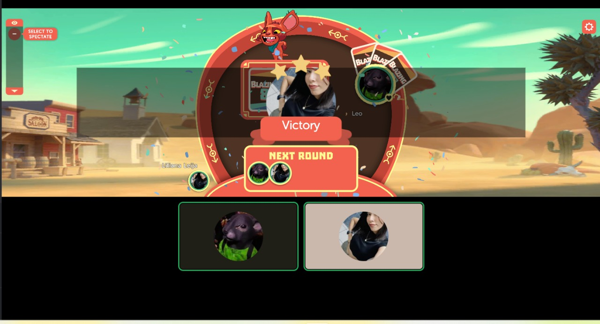
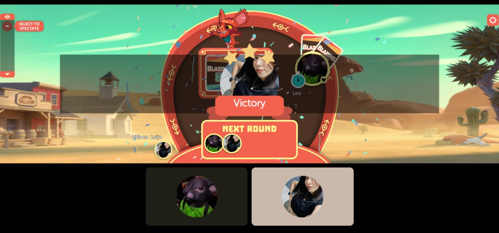
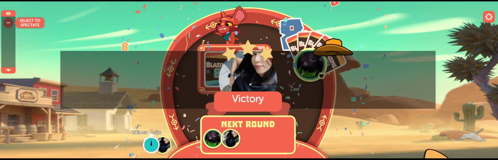
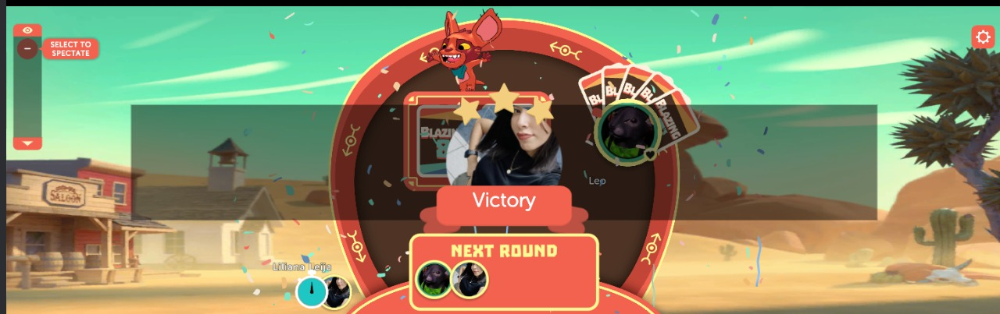
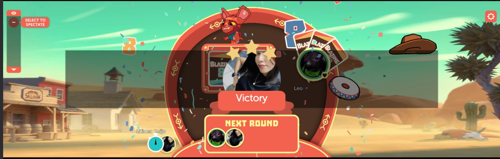
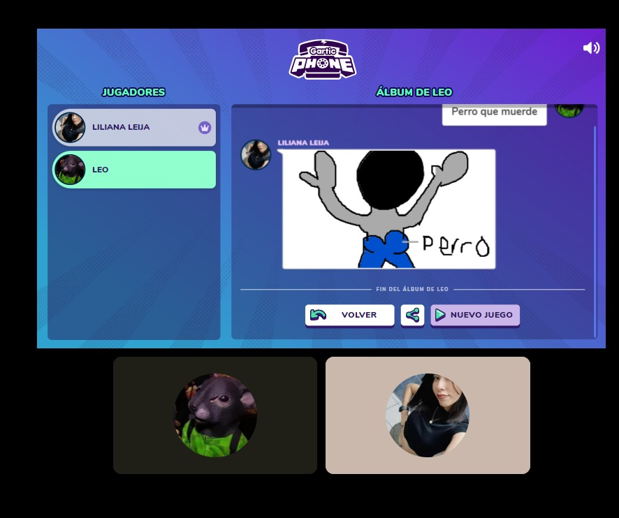
19/12/2024
Nos dimos una arrastrada en el Metrobol, pero me encantó demasiado el día y todo gracias a ti. Claro que fue un día inolvidable, pues decidimos unirnos como una pareja y todo lo que conlleva algo tan bello como debe ser.
Me costó mucho decirte que me gustabas (aunque ya lo sabías) y más el pedirte que fueras mi novia. Un día que guardaré con mucho cariño en mi corazón, así como todos los días en los que tu estás y se resume desde que llegaste a mi vida.


04/02/2025
Puedo decir mucho de este día tan especial para mi, si bien ya sabía que me tenías algo para regalarme, no pude sentirme tan más emocionado y feliz de que me dieras unos regalitos tan lindos. Se que detrás de todo hubo muchísimo amor y claro, el que hayas pensado en mi. No pude contener la alegría, creeme que cada vez que recuerdo todo lo lindo que me dices, cosas que me cuentas y momentos que paso a tu lado, no puedo evitar el llorar.
Valoro con todo mi corazón todo lo que haces por mi cada día, me encanta el que estés ahí siempre, me llena de mucha felicidad y yo siempre cuidaré con mucho amor cada cosita que tenga de ti. No cambiaría nada de lo que tengo ahora, sin duda alguna, el mejor regalo que puedo tener, es el que tu estés en mi vida y el que hayas llegado en un gran momento. Muchas gracias por ser tu, muchas gracias por todo y no solo fue este día, todos los días son tan lindos, maravillosos, perfectos, increíbles, tranquilos y especiales para mi.
Te amo como no te puedes imaginar, siempre estaré eternamente agradecido de cada hermoso día que paso contigo y son todos de esa manera desde que llegaste.
07/02/2025
Fue el primer día en el que pudimos pasar mucho tiempo juntos dentro de la escuela, hicimos de todo ese día corazón, jugamos, platicamos tanto, me pusiste coqueta, hasta me diste una arrastrada en el ajedrez y UNO. Para mi el estar contigo significa todo y no importa el lugar, en donde sea pero contigo Lily.
El que estés en mis brazos me hace pensar, sentir y decirte con toda firmeza el que nunca te vayas, disfruté muchísimo el día y vieras lo hermoso que se siente abrazarte, simplemente estar ahí y poder disfrutar esos momentos mágicos que me haces sentir. Este día fue uno tan perfecto para mi, se que siempre te lo digo, no hay día en el que no sea así y han sido momentos únicos.
Imposible no ver la hermosa persona que eres y mis ojos brillan por tener a tan maravillosa niña en mi vida. Me encantas como no te puedes imaginar, gracias por ser esa bonita coincidencia que siempre había esperado. Te amo, siempre será así y no dudes de ello.
21/03/2025
Fotito de Marzo y si bien desconocía por completo el por qué se daban flores ese día, me di la tarea de investigar y claro que no te ibas a quedar de espectadora. La verdad tuve la oportunidad de darte un detallito muy bonito, cuando lo hago siempre es de muchisímo corazón y en verdad quiero ver esa hermosa sonrisa siempre. Flores para mi Lily hermosa :).
Fue un día increible, vieras lo mucho que me divertí, reir, platicar, colorear, jugar es simplemente maravilloso y sabiamos perfectamente que sería de esa manera, disfrutar cada momento en los que estemos juntos. Cada momento que paso contigo siempre es mágico y estar a tu lado simplemente es hermoso. Esta semana también cumplimos 3 meses, unos meses maravillosos y los mejores para mi, siempre tengo ese mismo deseo, el estar contigo toda una vida.
En verdad soy un individuo muy afortunado, porque eres tan linda conmigo y amo cada parte de ti. Me encantas de manera fisica y emocional. Verte tan feliz no tiene precio y se que seguirás teniendo días que nunca se olvidarán, yo guardo en mi corazón cada momento especial y los recuerdo con tanto amor. Sabes que tu eres parte de ello y dejame decirte que figuras en cada uno de ellos.
Siempre te lo diré, pero estoy tan agradecido por dejarme estar en tu vida, por hacer tanto por mi, por alegrarme sin importar que, me haces sentir tan amado y respetado. Gracias de todo corazón por ser tu conmigo, en verdad nunca cambies, sientete segura en este espacio y conmigo. Nunca te dejaré sola. Te amo muchisímo mi hermosisima novia Lily ❤️.
28/03/2025
¿Recuerdas este día? Ese día recuerdo muy bien que me dijiste que me ibas a robar para ir a ver el concierto de Kenia Os en el cine y dejame decirte que me quede tan emocionado que no quería que se acabara. Estuvimos todo un día juntos e hicimos de todo corazón.
Desde la mañana que estabamos viendo en un salón Jalando Fierro con El Mariana y claro que acompañandolo con nuestros respectivos churros (me lo empujabas y me daba una risa loca). Fue mi segunda vez en patio y aprovechamos el tiempo para comer nuestras Ke-Tiras preferidas, cada vez que comemos tenemos un desorden y armamos nuestras competencias de eruptos que al final siempre ganas.
También como olvidar el manejar y chocar loco que tenías en el juego, definitivamente dominas el manual y el autoamtico jajaja. Es justamente el video que grabé y que estás viendo, mirala nada más que loba. Cuando finalmente llegó casi la hora de que comenzara la función, me percaté de que las personas iban de rosa y yo iba de todo menos de eso, me dio mucha risa cuando me dijiste que llevabas puesto tus calzones rosas y no hay mejor representación de color que esa, me encantó.
Se que me falta mucho que aprender sobre Kenia Os y cada canción fue un deleite para mis oidos, me quedé tan encantado y yo pude ver en tus ojos esa gran emoción y felicidad que sentiste en ese momento al estar ahí viendola a ella en la pantalla grande, se perfectamente que sus canciones te encantan muchisimo y así como yo, tu disfrutaste cada minuto como cuando fuiste a su concierto hace algunos ayeres.
Te agradezco de todo corazón el que me hayas invitado todo el día. Recuerdo ese día con tanto amor y en verdad cada uno en el que tu eres parte, disfrutamos de cada momento en el que estamos juntos y sin importar lo que hagamos, tu compañía para mi es y siempre será la más hermosa. Le agradezco al destino de que te haya puesto en mi camino, pues llegaste a mi vida para llenarla de mucha alegría y felicidad absoluta, llena de los colores más radiantes que pueden existir.
Y a día de hoy, ese amor que yo siento por ti, nunca bajó y aumenta con el pasar del tiempo. Amo que me enseñes lo que es parte de tu vida, lo que más te gusta y lo que no, lo que forma parte de tu mundo y de la maravillosa mujer que eres. Nunca dejes de hacerlo por fis, yo estaré siempre encantado y dispuesto de hacer cualquier cosa contigo :).
Eres la coincidencia más bonita, mis ojos siempre brillan cuando te ven y siempre es con amor. Te amo muchisimo y con todo mi corazón mi Lily bonita, mi hermosisima novia ❤️. Somos todas unas OG.
24/04/2025
Estaba bien necio porque ya te quería ver, las vacaciones de semana santa para mi estaban siendo eternas y vieras lo mucho que te extrañaba corazón. Ahora uno de mis lugares recurrentes es sin duda alguna patio (me encanta ir contigo) y claro que nos vimos ahí como debe ser.
Me divertí como no tienes una idea, adoro tener charlas tan amenas contigo y sabemos perfectamente que podemos hablar de cualquier cosita sin duda alguna. Comimos muy rico y teniamos un santo problema con un pelito que se veía muy coqueto afuera de tu nariz, te quité tantos pelos y menos el que era jajaja, me encantó.
De tanta maltratada fuimos a ver que jugabamos y tenías un matar loco de dinosaurios pero padre, no había nadie que te detuviera y se me dio la oportunidad de poder ayudarte, pero no soy muy bueno que digamos. Para mi estar contigo significa todo, es felicidad absoluta, mucho amor, ese deseo de que cada momento en el que estoy contigo sea eterno y estar siempre en tus brazos como un niño. Mis ojos no se cansarán de ver tus hermosos ojos que brillan más que el mismo sol y son estos mismos ojos que día con día te ven con tantisimo amor. Soy muy afortunado de ser parte de tu vida, me encanta conocer día con día más sobre ti y dejame decirte que nunca dejas de sorprenderme.
Estoy tan orgulloso de ti, realmente eres una mujer muy fuerte y que a pesar de los malos momentos siempre das lo mejor de ti. Vas a llegar muy, muy lejos porque se de lo que eres capaz de hacer y no hay momento o situación en la que no hagas un trabajo magistral, dejame decirte que siempre te luces muchacha. Nunca dejes de soñar, poco a poco esos mismos sueños se están cumpliendo y yo estaré ahí en la primera fila gritando y aplaudiendo con tanta emoción. Espero y la cartita que te di ese día te haya encantado, no olvides que somos mitades y para mi siempre serás mi complemento perfecto. Te amo con tanta intensidad y con todo mi corazón mi Lily linda.
26/04/2025
Dos días despues de habernos visto, teniamos una fiesta de cumpleaños y que fiesta dejame decirte. Desconocia por completo en donde estaba y antes de que llegaras me di un buen tropezon como debe ser. Me dio tanta risa la criticadera que teniamos, pero le dimos con todo a ese cumpleaños y como no olvidar el chiste del bebé y el perro jajaja.
No importa el lugar corazón, lo que más importa es que nuestros corazones y nosotros estemos juntos, cuando estoy contigo se perfectamente que me voy a divertir como no tienes idea, todo es perfecto a tu lado y nos la pasamos bombisima. A decir verdad, cuando pienso en todos esos momentos que hemos pasado juntos, siento tanta felicidad y es imposible no llorar porque cada bella parte de ti siempre está en mi mente, alma y en este corazón enorme que cada día te ama más.
Desde que te conocí mi vida está repleta de momentos únicos, inolvidables y que siempre estarán en mi corazón. Si bien hay días en los que no nos vemos, tu estás conmigo en todo momento y no dejo de pensar en ti en ningun momento. Eres mi persona favorita, no hay día en el que no esté enamorado de ti y te amooo con todo mi corazón.
19/07/2025
Claramente teniamos que ir a la feria y que mejor para ver a Yeri Mua, estaba muy emocionado de ir porque iba a estar con mi hermosisima novia, sabía perfectamente que nos ibamos a divertir muchisimo. Nos logramos subir a un juego mega extremo y hasta nos ibamos a ir por mi culpa jajaja, ese martillo estaba durisimo y con ese juego bastó para sentarme. Un gritar que teniamos pero loco, pero como me encantó cada juego que nos subimos y poco a poquito fuimos bajando la intensidad de los juegos
Pero los demás juegos no se quedaron atrás dejame decirte, nos estabamos resbalando pero padre en el autolavado para salir bien limpios, la rueda de la fortuna despues de una aporreada y ahora que lo pienso, el ultimo juego fue el más duro y es que ese gusanito daba una bajada que hasta se sentia en el estomago. En verdad fue mi primera vez en los juegos, me divertí muchisimo y eso fue posible porque tu estás a mi lado corazón, cada día que pasa en verdad le agradezco al destino, a dios y a la hermosa coincidencia por cruzarte en mi camino, porque desde que estás en mi vida he sido la lombriz más feliz, amada, escuchada y lleno de muchisimo amor
En verdad fue el dia de primeras veces porque también fue mi primer concierto, tal vez no me sepa sus canciones, pero en verdad como lo disfruté y me divertí muchisimo cada instante, momento y ratito en el que tu estás conmigo. Tenían un cantar pero con todas sus ganas, mi muchacha también lo estaba haciendo y bien emocionada bailando, me hace muy feliz que disfrute y que me enseñes día con día tu mundo maravilloso lleno de los colores más brillantes y hermosos que pueden existir.
Fue un día lleno de momentos inolvidables como lo es cada momento en el que estoy contigo, siempre llenos de amor, diversión, de risas tontas, simplemente disfrutando sin importar lo que hagamos porque nuestra compañia, el estar ahí siempre el uno para el otro sin importar que y amo cada momento siempre será lo más importante para mi. El que mi Lily hermosa siempre sea muy feliz y que se sienta siempre muy bien porque cada día se lo merece, así como se merece lo más hermoso que este mundo puede ofrecer. Te amo muchisimo mi corazón de melocotón, nunca dejes de sonreir y no olvides que para mi siempre serás la mujer con la que siempre soñe ❤️.
18/10/2025
1/11/2025
29/11/2025

20/12/2025